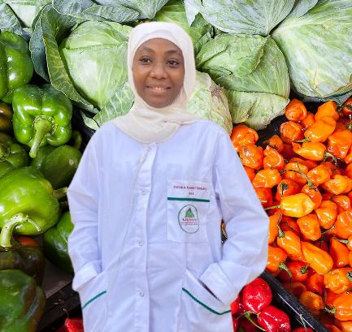

HRD - Nutrition Alimentaire
Étudiante passionnée, je vous accompagne pour une alimentation saine et équilibrée.
Contactez-moi


.JPG)
À propos de Henda Ramatoulaye Drame
 Je m’appelle Henda Ramatoulaye Dramé, étudiante en Nutrition humaine et Sciences des aliments à l’Université du Sine Saloum. Passionnée par tous les domaines de la nutrition, je mets mes recherches et mes connaissances au service de la santé et du bien-être des familles.
Mon ambition est multiple : entreprendre dans l’agroalimentaire, travailler avec des ONG pour lutter contre la malnutrition, mais aussi sensibiliser dans les écoles et proposer des conseils adaptés à tous.
Je crois fermement à la mise en valeur des produits locaux en les combinant avec la rigueur scientifique pour développer des solutions alimentaires durables. J’ai déjà eu l’opportunité de participer à plusieurs projets et stages qui m’ont permis d’affiner mes compétences et de comprendre les réalités du terrain.
Mon rêve est de fonder et diriger une entreprise dans le domaine de la nutraceutique, afin d’innover autour d’aliments fonctionnels et d’impacter positivement la vie de nombreuses familles.
Services
Consultation individuelle
Programme personnalisé selon vos besoins.
Suivi nutritionnel
Accompagnement régulier pour atteindre vos objectifs santé.
Plan alimentaire
Menus adaptés et équilibrés pour toute la famille.
Conseils & Articles
Recherches et recommandations nutritionnelles pour une alimentation saine.